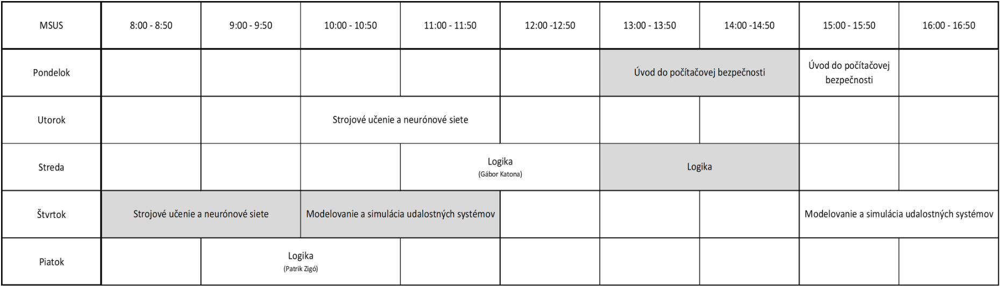

„Programatické generovanie 3D identifikátora pre identifikáciu objektov v prostredí zmiešanej reality“
Predmet: Tímový projekt I-API
Zadávatelia:
Ing.Eugen Antal PhD
Oto Haffner
Erik Kučera
Tím
bol založený s cieľom vyriešiť danú problematiku, ktorá má aj praktické využitie. Členovia tímu majú radi prácu, ktorá je hmatateľná a je vidieť výsledok práce. Téma identifikátora je aktuálna a využiteľná v priemysle, v službách kde je automatizovaný tok materiálu
Členovia tímu:
Gábor Katona (MSUS)
- skúsenosti zo spracovávaním kamerových záberov, a s rozpoznávaním dopravných značiek, znalosť programovacích jazykov Python, C/C++, Java, Php, JavaScript, HTML, CSS
Patrik Zigó (MSUS)
- skúsenosti s Unity, znalosť programovacích jazykov Python, C/C++, Java, Php, JavaScript, HTML, CSS, C#
Motivácia
- Využiteľnosť skúseností v praxi a možno aj v budúcom povolaní
- Inovatívne riešenie, nakoľko dnes sa používajú väčšinou 2D identifikátory
- Vieme spojiť už nadobudnuté vedomosti (z riešenia bakalárskej práce) s novou témou
Plán projektu
- Analýza metód a algoritmov identifikátorov
- Analýza 3D identifikátorov a možností
- Definovanie vlastného 3D identifikátora
- Generovanie 3D identifikátora
- Vytvorenie programu na rozpoznávanie 3D objektu
- Testovanie funkčnosti
- Vyhodnotenie testov a odporúčania
Predpokladané zdroje
Materiálne
- softvér na generovanie 3D identifikátora -definovaný po analýze (možno bude aj voľne dostupný)
- 3D tlačiareň
- Softvér na rozpoznávanie 3D objektu (možnosť využitia voľne dostupného softvéru)
- Kamera alebo telefón na snímanie obrazu
- Počítač
Nemateriálne
- Informácie od zadávateľov
- Dostupné zdroje informácií z internetu a z literatúry
Rozvrh práce členov tímu
